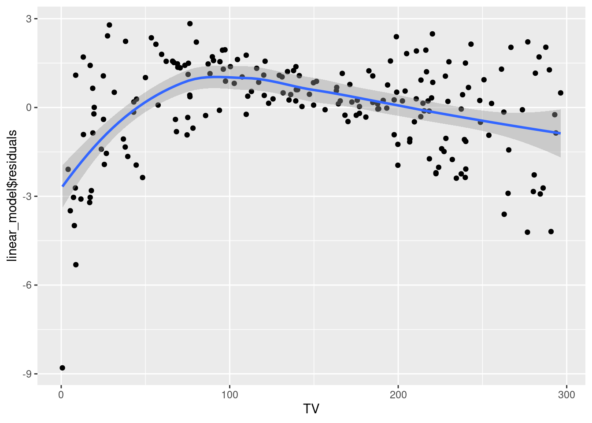
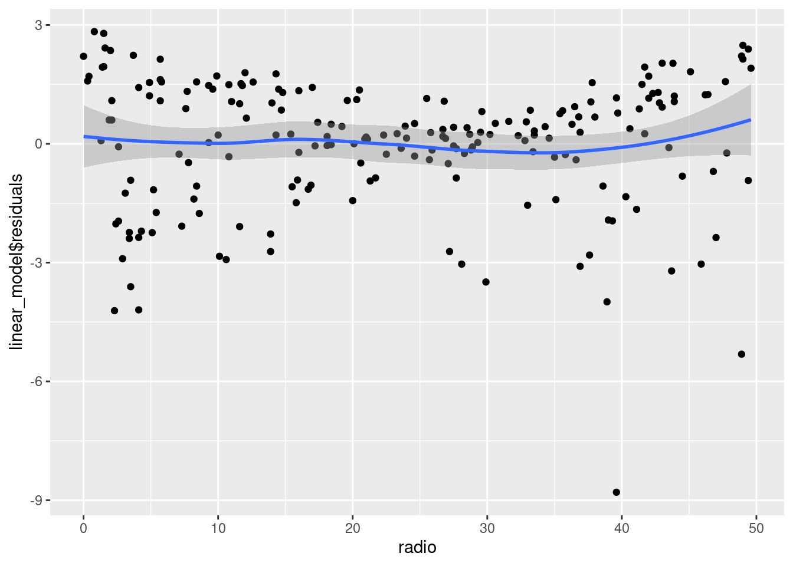
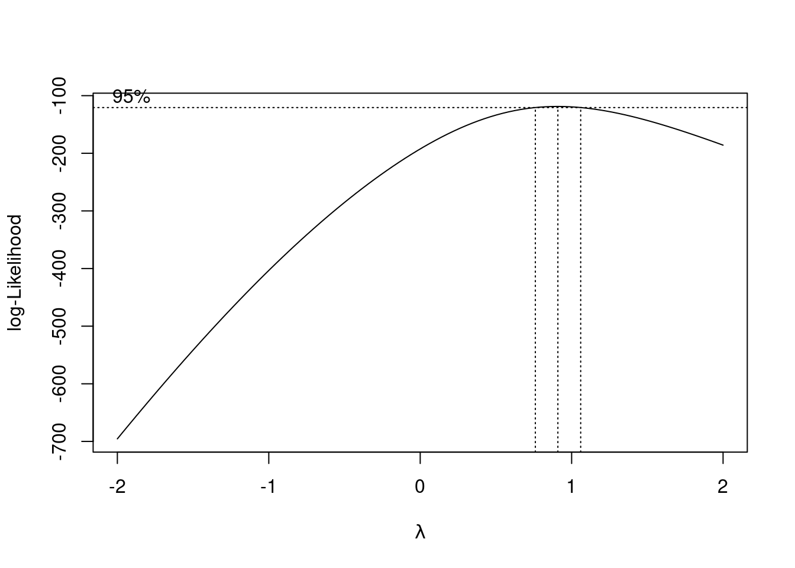
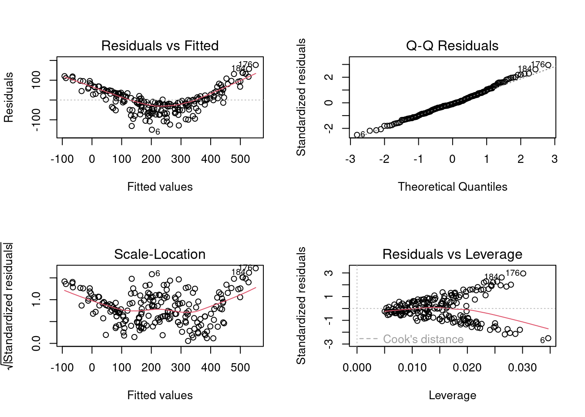
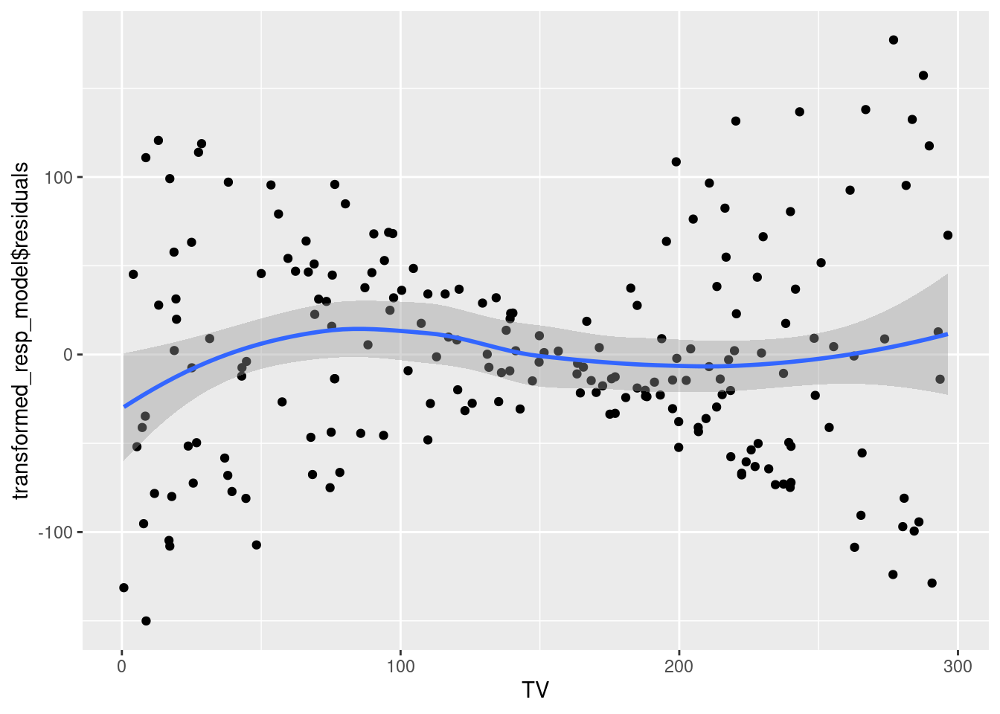
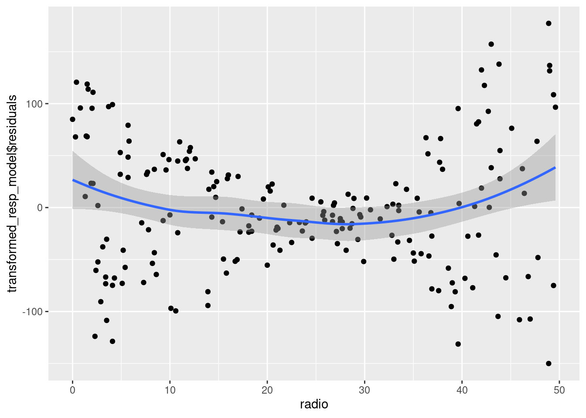
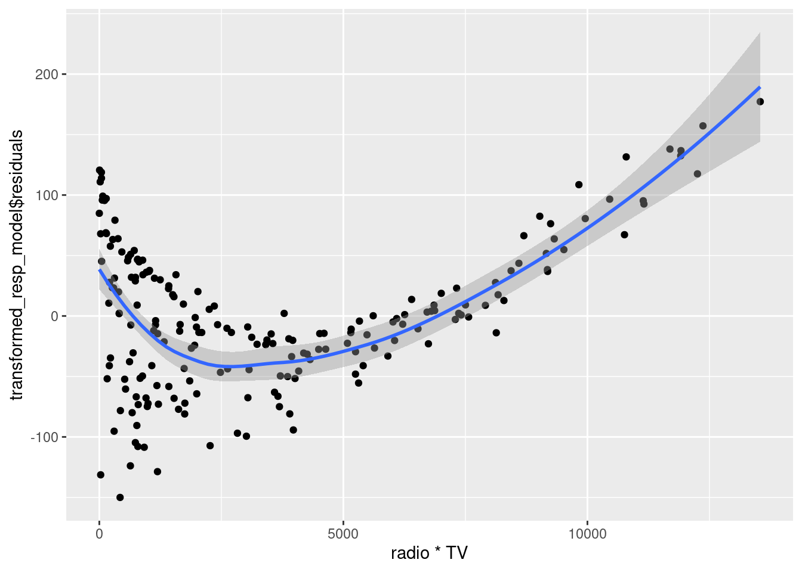
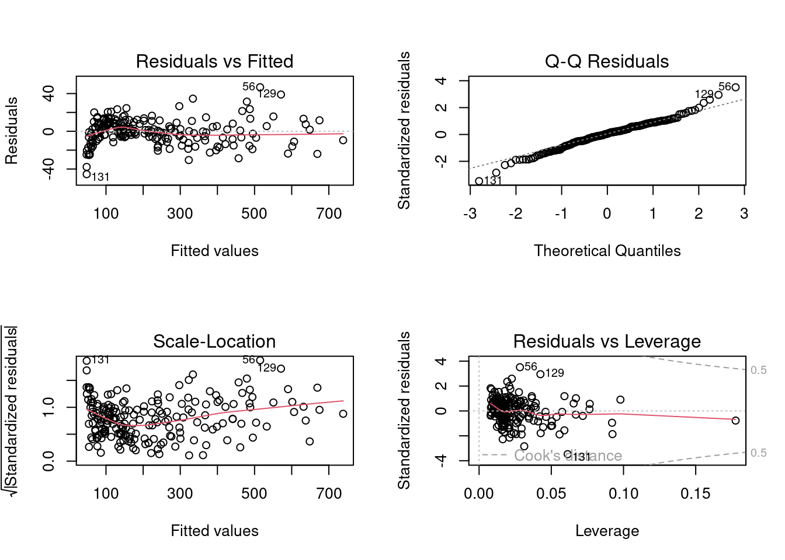

library(ggplot2) #for making plots
library(lmtest) #for bptest()
library(MASS) #for boxcox()
#library(rgl) #for 3D plots5 Diagnostics and Remedial measures (MLR)
Let us consider the Advertisement.csv dataset. We will develop a multiple linear regression model to predict sales based on expenditure on advertisement via TV and radio.
5.1 Loading libraries
5.2 Reading data
sales_data <- read.csv('./Datasets/Advertising.csv')5.3 Developing model
linear_model <- lm(sales~TV+radio, data = sales_data)5.4 Model fit
With two predictors, the model fit can be visualized via a 3-dimensional plot (2 predictors on 2 axes, and the response on the 3rd axis). However, with more than 2 predictors it will be impossible to visualize the model fit based on all the predictors and response. Thus, visualizing the response with the predictors is not an effective strategy. We will visualize the model fit via a 3D plot for this example since we have only 2 predictors, but that will be just for seeing the effectiveness of our approach of performing diagnostic tests and using remedial measure to develop a MLR model. We will not use the visualization of the response with the predictors to propose a model development strategy as such a strategy will fail for more than 2 predictors.
Let us check the goodness-of-fit of the model.
summary(linear_model)
Call:
lm(formula = sales ~ TV + radio, data = sales_data)
Residuals:
Min 1Q Median 3Q Max
-8.7977 -0.8752 0.2422 1.1708 2.8328
Coefficients:
Estimate Std. Error t value Pr(>|t|)
(Intercept) 2.92110 0.29449 9.919 <2e-16 ***
TV 0.04575 0.00139 32.909 <2e-16 ***
radio 0.18799 0.00804 23.382 <2e-16 ***
---
Signif. codes: 0 '***' 0.001 '**' 0.01 '*' 0.05 '.' 0.1 ' ' 1
Residual standard error: 1.681 on 197 degrees of freedom
Multiple R-squared: 0.8972, Adjusted R-squared: 0.8962
F-statistic: 859.6 on 2 and 197 DF, p-value: < 2.2e-16The model \(R^2_{adj}\) is 90% indicating a good-fit of the model to the data.
5.5 Diagnostic plots & statistical tests
Let us make diagnostic plots that help us check the model assumptions.
par(mfrow = c(2,2))
plot(linear_model)
From the plot residuals vs fitted values, we see that the relationship does not seem to be linear. However, the homoscedasticity assumption seems to be only mildly violated.
From the Q-Q plot, we can see that the error distribution is left-skewed, and thus the assumption of normal distribution of errors is also violated.
Let us verify our visual check with statistical tests.
bptest(linear_model)
studentized Breusch-Pagan test
data: linear_model
BP = 4.8093, df = 2, p-value = 0.0903shapiro.test(linear_model$residuals)
Shapiro-Wilk normality test
data: linear_model$residuals
W = 0.91804, p-value = 4.19e-09Considering a significance level of 5%, the model does not satisfy the assumption of normal distribution of errors, but satisfies the homoscedasticity assumption.
Note that the statistical test for the linearity assumption is not possible since we don’t have replicates for the combination of values of TV and radio expenditures as shown below.
nrow(unique(sales_data[,c('TV', 'radio')]))[1] 200The data has 200 observations, and each of them is a unique combination of expenditure on TV and radio. Thus, we’ll only use the diagnostic plots to check the linearity assumption.
In multiple linear regression, we also develop the residual plots against each predictor. These plots may indicate the predictor(s) that may not have linear relationship with the response.
# Residuals vs TV expenditure
ggplot(data = sales_data, aes(x = TV, y = linear_model$residuals))+
geom_point()+
geom_smooth()`geom_smooth()` using method = 'loess' and formula = 'y ~ x'
The relationship between TV expenditure and sales seems to be slightly non-linear. The constant error variance assumption is also violated.
# Residuals vs radio expenditure
ggplot(data = sales_data, aes(x = radio, y = linear_model$residuals))+
geom_point()+
geom_smooth()`geom_smooth()` using method = 'loess' and formula = 'y ~ x'
The relationship between radio expenditure and sales seems to be linear. However, the constant error variance assumption is violated.
5.6 Remedial measures
Based on the diagnostic plots, the linearity assumption and the assumptions regarding error distribution are violated. Since both linearity and error distribution assumptions are violated, we will recommend transforming the response sales instead of the predictors. Transforming sales is likely to change the nature of relationship between the response and the predictors, as well as the error distribution.
Let us use the Box-Cox procedure to identify the appropriate transformation of the response sales.
par(mfrow=c(1,1))
boxcox(linear_model)
From the above plot, we observe that the Box-Cox procedure suggests no transformation of the response. However, as the residual distribution is left-skewed, a convex transformation of the response was expected.
Note that the Box-Cox procedure does not guarantee the appropriate value of the power transformation \(\lambda\) to transform the residual distribution to normal. It estimates the value of \(\lambda\) by maximizing the likelihood of the data based on the assumption of normal distribution of errors. Thus, it is likely to estimate the value of \(\lambda\) that pushes the distribution of the residuals closer to the normal distribution. However, since we have finite data, there may exist other distributions that maximize the likelihood of the data by chance, resulting in an inappropriate value of \(\lambda\).
As we can see that a convex transformation will be appropriate in this case, let us transform sales with one of the most popular and simple convex transformation, which is the polynomial transformation of degree 2.
transformed_resp_model <- lm(sales^2 ~ TV+radio, data = sales_data)
summary(transformed_resp_model)
Call:
lm(formula = sales^2 ~ TV + radio, data = sales_data)
Residuals:
Min 1Q Median 3Q Max
-150.040 -41.080 -5.875 36.813 177.224
Coefficients:
Estimate Std. Error t value Pr(>|t|)
(Intercept) -112.08467 10.66220 -10.51 <2e-16 ***
TV 1.30461 0.05034 25.92 <2e-16 ***
radio 6.18844 0.29109 21.26 <2e-16 ***
---
Signif. codes: 0 '***' 0.001 '**' 0.01 '*' 0.05 '.' 0.1 ' ' 1
Residual standard error: 60.87 on 197 degrees of freedom
Multiple R-squared: 0.8577, Adjusted R-squared: 0.8563
F-statistic: 593.8 on 2 and 197 DF, p-value: < 2.2e-16The transformed model with \(R^2_{adj} = 86\%\) seems to have a slightly worse goodness-of-fit as compared to the previous model. Let us make diagnostic plots to check model assumptions.
par(mfrow=c(2,2))
plot(transformed_resp_model)
We observe that there is an even stronger departure from the linear relationship assumption as compared to the previous model. However, the error distribution seems to be normal. There may be slight departure from the homoscedasticity assumption. Let us verify the homoscedasticity and normality assumptions with statistical tests.
bptest(transformed_resp_model)
studentized Breusch-Pagan test
data: transformed_resp_model
BP = 5.2091, df = 2, p-value = 0.07394shapiro.test(transformed_resp_model$residuals)
Shapiro-Wilk normality test
data: transformed_resp_model$residuals
W = 0.99123, p-value = 0.2681Based on the above tests, the model satisfies both the homoscedasticity and the assumption of normal distribution of errors.
Transforming the predictors may help make the relationship linear without changing the distribution of errors, which is what we need.
Let us visualize the residuals against each predictor to identify the predictor having a non-linear relationship with the response.
# Residuals vs TV expenditure
ggplot(data = sales_data, aes(x = TV, y = transformed_resp_model$residuals))+
geom_point()+
geom_smooth()`geom_smooth()` using method = 'loess' and formula = 'y ~ x'
The relationship between TV expenditure and sales seems to be close to linear. Thus, transforming TV may not be appropriate.
# Residuals vs radio expenditure
ggplot(data = sales_data, aes(x = radio, y = transformed_resp_model$residuals))+
geom_point()+
geom_smooth()`geom_smooth()` using method = 'loess' and formula = 'y ~ x'
The relationship between radio expenditure and sales seems to be close to linear. Thus, transforming radio may not be appropriate.
Our current model is additive, i.e., the expected change in the response sales with a unit change in either predictor is independent of the value of the other predictor. However, this assumption may not be correct. For example, the expected change in the response sales with a unit change in TV expenditure may depend on the radio expenditure. In other words, the predictors TV and radio may interact to effect the response. If they are indeed interaction, then it can be observed in the plot of residuals against the interaction.
# Residuals vs TV*radio expenditure
ggplot(data = sales_data, aes(x = radio*TV, y = transformed_resp_model$residuals))+
geom_point()+
geom_smooth()`geom_smooth()` using method = 'loess' and formula = 'y ~ x'
We can see that the residuals seem to have a relationship with the interaction of TV and radio expenditures. There seems to be curvilinear relationship between the residuals and the interaction of radio and TV. Thus, we will add the TV*radio as well as \(`(TV*radio)^2`\) in the model. However, note that it will be better to first only add TV*radio in the model, check the diagnostic plots, and if it doesn’t suffice, then consider addin \(`(TV*radio)^2`\). This is because a simpler model, if sufficient, will always be preferred over a more complex model.
interaction_model <- lm(sales^2 ~ TV+radio+TV*radio+I((TV*radio)^2), data = sales_data)
summary(interaction_model)
Call:
lm(formula = sales^2 ~ TV + radio + TV * radio + I((TV * radio)^2),
data = sales_data)
Residuals:
Min 1Q Median 3Q Max
-45.472 -7.057 0.722 8.399 46.748
Coefficients:
Estimate Std. Error t value Pr(>|t|)
(Intercept) 4.461e+01 3.578e+00 12.466 <2e-16 ***
TV 2.835e-01 2.395e-02 11.836 <2e-16 ***
radio 5.850e-02 1.405e-01 0.416 0.678
I((TV * radio)^2) 9.155e-07 9.534e-08 9.602 <2e-16 ***
TV:radio 3.284e-02 1.538e-03 21.347 <2e-16 ***
---
Signif. codes: 0 '***' 0.001 '**' 0.01 '*' 0.05 '.' 0.1 ' ' 1
Residual standard error: 13.5 on 195 degrees of freedom
Multiple R-squared: 0.9931, Adjusted R-squared: 0.9929
F-statistic: 6987 on 4 and 195 DF, p-value: < 2.2e-16Note that \(R^2_{adj}\) of the model with interaction terms is 99%, which indicates a much higher goodness-of-fit as compared to the previous models. However, this need not be a good news as the model may be over-fitting, i.e., fitting on the noise in the data.
Along with testing the model assumptions, we should also test the model accuracy on unseen data, to check for potential overfitting. This can be done by examining the cross-validated error. However, we will defer this topic to a later chapter.
Let us make the diagnostic plots.
par(mfrow=c(2,2))
plot(interaction_model)
Note that the linearity assumption seems to be satisfied by the model with the interaction terms. There seems to be only a slight departure from the homoscedasticity and the normal distribution of errors assumptions. As we have transformed the predictors, the distribution of errors is not expected to change much.
Let us verify the assumptions based on statistical tests.
bptest(interaction_model)
studentized Breusch-Pagan test
data: interaction_model
BP = 17.163, df = 4, p-value = 0.001797shapiro.test(interaction_model$residuals)
Shapiro-Wilk normality test
data: interaction_model$residuals
W = 0.98616, p-value = 0.04772Note that there is no strong departure from the homoscedasticity and normal distribution of errors assumptions. If we consider a significance level of 0.1%, the model satisfies both the assumptions. The linear relationship assumption seems to be satisfied based on the diagnostic plot.
In this example, we have used diagnostic plots and intuition to develop a model that satisfies the assumptions. Note that intuition may not work in all cases, and we’ll study more remedial measures in later chapters to address model assumption violations.